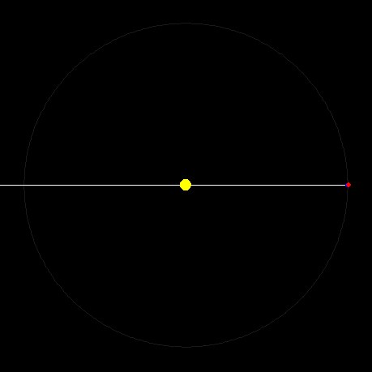

Chapter 11: ParallaxBut the planet's orbit must first be investigated by finding he nodes and the inclination of the planes. Again, the inclination and the nodes cannot be found without knowing the diurnal parallax, at least if this should turn out to be relatively large. One must therefore start with the parallax. I shall present two ways to find it. (p.202) What is parallax?Parallax is the perceived change in an object's position caused not by its motion, but by the motion of the observer. Walk around the room you are in with one eye closed, and watch how the relative positions of objects appear to change as you move. The parallax Kepler is talking about in this chapter is diurnal parallax, which is specifically the parallax caused by taking observations at different times of the day. You can simulate this yourself: Have a seat, close one eye, and turn your head left and right. Since you're sitting still, your head isn't at a different place, but your open eye is changing its location in space. Notice that objects close to you change their relative locations when you do this. Is it important in astronomy?This comes up in astronomy when we consider the time of day that an observation is taken. Since we are on the surface of the earth, we move not only with the body of the earth, but around it as well. Looking at a planet at different times of the night means that we have to account for the rotation of the earth as well as its revolution around the sun. But, how much does our diurnal rotation affect our observations? This depends on the size of the earth's orbit relative to the size of the body of the earth itself. If the body were large relative to the size of its orbit, then the parallax would be significant: Note how the sun's apparent position would be different at dawn and at dusk. But, what if the earth were smaller, or its orbit much larger:  Will parallax contribute an observable change now? Here's a 3D animation of an exaggerated parallax. The green line is drawn from the center of the earth's body, while the light blue one is drawn from an observer on the rotating surface of the earth. (Hold SHIFT while dragging with your mouse to zoom. Ignore the vibration of the green line -- it's a glitch.) What does Kepler discover?Kepler uses two ways to determine the size of the Earth-Mars parallax: one using Tycho's measurements near sun-rise and sun-set, and a second way, using his own "clown-show" observations. He determines that the parallax Tycho claims to exist, actually does not, and that the parallax was so small, that it would be an error to take it into account and correct for it in observations. The idea that the sun was a mere 230 earth-radii distant is rejected, although Kepler is not certain of the true distance (which is actually more on the order of 47,000 earth-radii). |